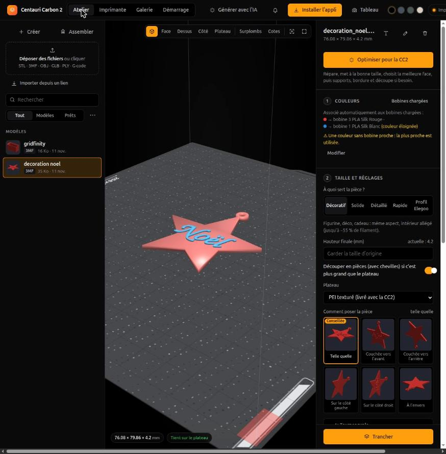
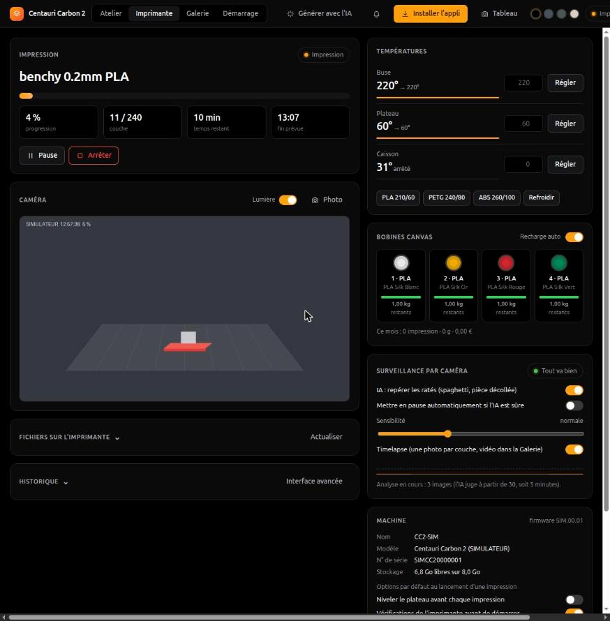

Ton atelier pour l'Elegoo Centauri Carbon 2
Préparer un modèle en quatre couleurs, le trancher, le lancer, puis suivre l'impression couche par couche, depuis le PC, le téléphone ou une tablette au mur. Tout tourne chez toi.



Tout le chemin, de l'idée à la pièce
Un seul outil, guidé, pensé pour la CC2 : ses profils, son CANVAS de quatre bobines, son plateau et ses particularités.
Multicolore CANVAS
Les couleurs du modèle vont aux bobines chargées, avec une purge dosée pour éviter le marbrage.
- Jusqu'à 4 couleurs, regroupées au-delà
- Moins de changements : couleurs simplifiées
Optimiser pour la CC2
Réparation du maillage, bonne taille, meilleure face au plateau, supports et bordure si besoin, découpe en pièces avec chevilles.
Tranchage intégré
OrcaSlicer et les profils Elegoo de la CC2, sans ouvrir de logiciel. Comparaison qualité, filament et temps.
Caméra et IA anti-ratés
La caméra de l'imprimante en direct, un œil IA qui repère les spaghettis, une pause automatique si tu veux, un timelapse.
Couche par couche
La pièce en 3D qui monte, une vue en coupe, la couleur en cours et les prochaines, avec le délai avant chaque changement.
Alertes sur le téléphone
Fin d'impression, plus de filament, erreur, et « plateau froid : tu peux retirer la pièce », même appli fermée (ntfy).
Téléphone et tablette
Une appli installable sur l'écran d'accueil, en HTTPS, protégée par un code. Un tableau de bord pensé pour une vieille tablette au mur.
Galerie et bilan
Chaque impression gardée avec photo et timelapse. Coche ce qui n'allait pas : la correction est proposée la prochaine fois.
Créer sans CAO
Des pièces paramétriques prêtes : bac Gridfinity, support de téléphone, visserie, engrenage, porte-clés et décoration à ton nom, lithophanie.
Quatre étapes, guidées
L'atelier te dit à chaque étape ce qu'il va faire et pourquoi.
Déposer
Un STL, 3MF, OBJ, GLB ou un lien MakerWorld. Ou une pièce de l'onglet Créer.
Préparer
Couleurs → bobines, taille, pose. « Optimiser pour la CC2 » fait le reste.
Trancher
Temps, filament, coût et nombre de changements de couleur avant de lancer.
Suivre
Caméra, couches, alertes, puis le bilan pour faire mieux la prochaine fois.
Installer
Linux x86-64, Python 3.12 et uv. Un PC ou un petit serveur de la maison suffit.
# le code git clone https://github.com/JEANPHI5507/atelier-cc2 cd atelier-cc2 && uv sync make slicer # OrcaSlicer et le plateau de la CC2 make ia # facultatif : l'IA anti-ratés # sans imprimante, pour essayer uv run cc2 simulateur # http://localhost:8788/lab/ # avec ta CC2 uv run cc2 --control dash --reseau